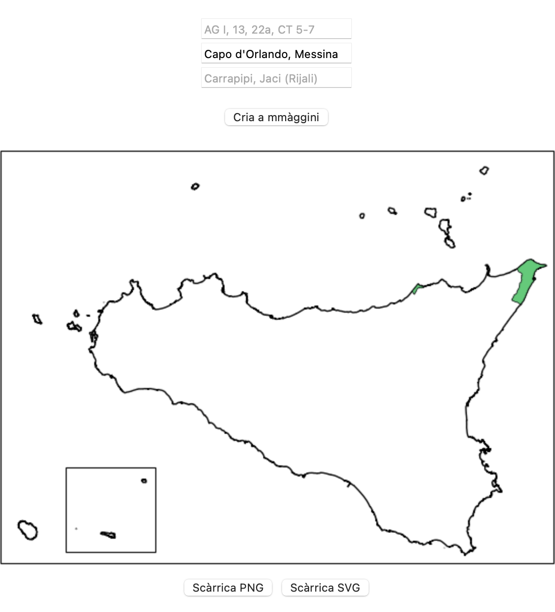
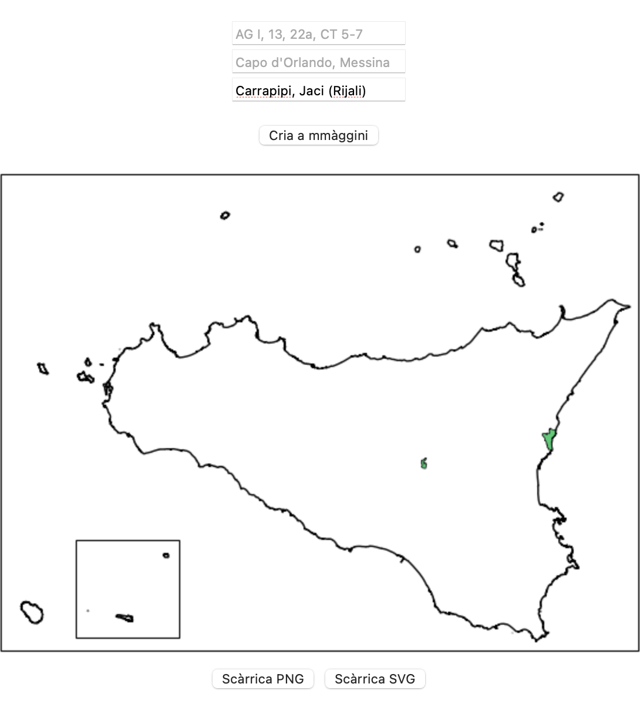
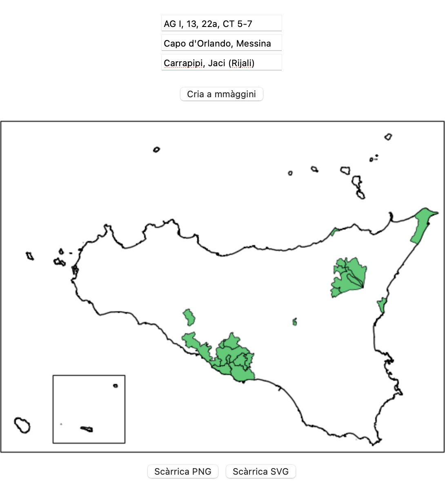

Quali cumuna? è n'app web pinzata pi taliari supra a na mappa i cumuna siciliani ca n'utenti ci passa a l'app cu na lista.
Pi mèttiri u testu ntê caseḍḍi, s'ànnu a sicutari sti règuli:
Sparti, si ponnu usari du' o tri caseḍḍi nzèmmula. Appoi l'app abbirsa i testi e l'allazza nta na lista ùnica.
A mmàggini criata si po macari scarricari ntê furmati PNG o SVG.
Accuminciamu vidennu comu s'usa a prima caseḍḍa. Facemu cuntu di sapiri ca na quarchi palora è diffusa ntê pruvinci di Girgenti e Catania, p'esempiu ntê banni addisignati dî sigli
A stissa cosa si po uttèniri mittennu direttu i noma taliani ntâ sicunna caseḍḍa. P'esempiu, scrivennu "Capo d'Orlando, Messina", s'utteni u risurtatu ca si vidi ntâ mmàggini cca sutta.
Ntâ terza caseḍḍa si ponnu mèttiri i noma dî cumuna 'n sicilianu, accussì comu ricugghiuti e standardizzati da Cademia Siciliana. A lista cumpleta s'attrova cca. P'esempiu, mittennu "Carrapipi, Jaci (Rijali)", s'utteni u risurtatu mustratu cca sutta. Camora, a lista nun è sana (di 391, sulu 195 ànnu statu tradutti), adunca nun tutti i cumuna su' dispunìbbili a sta manera.
Sparti, è pussìbbili usari tutti tri sti caseḍḍi ntô stissu mumentu, comu si vidi nta l'esempiu cca sutta. L'app allazza i dati nzitati nta na lista ùnica.
